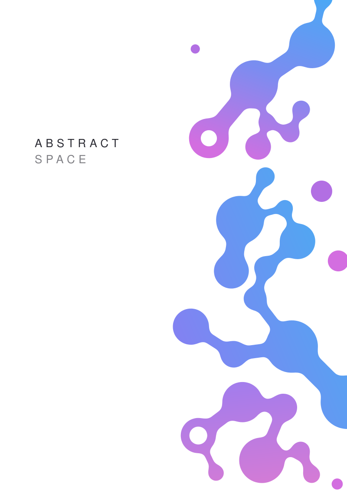
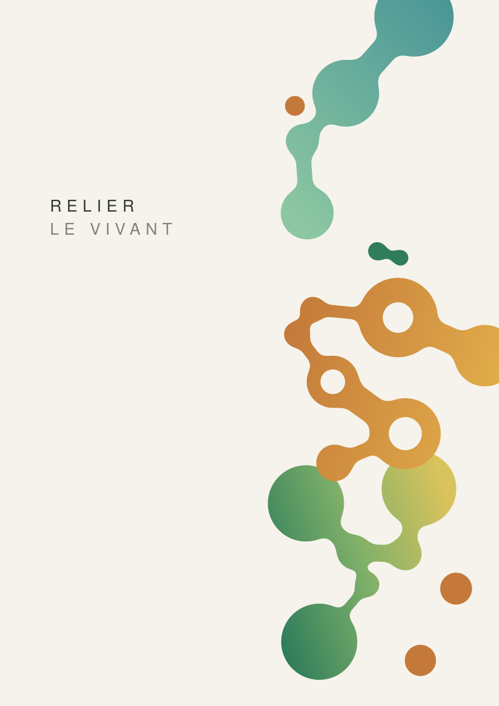
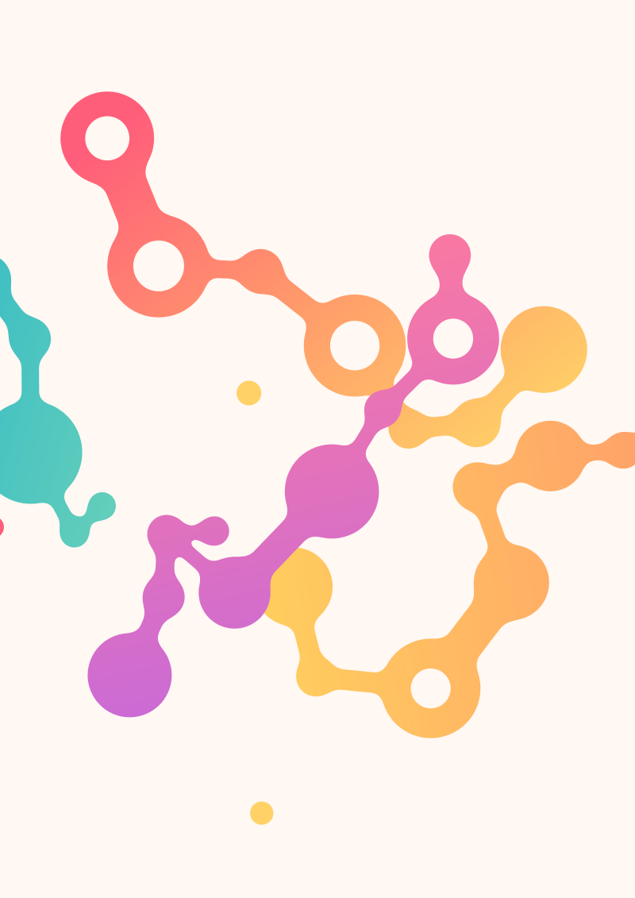
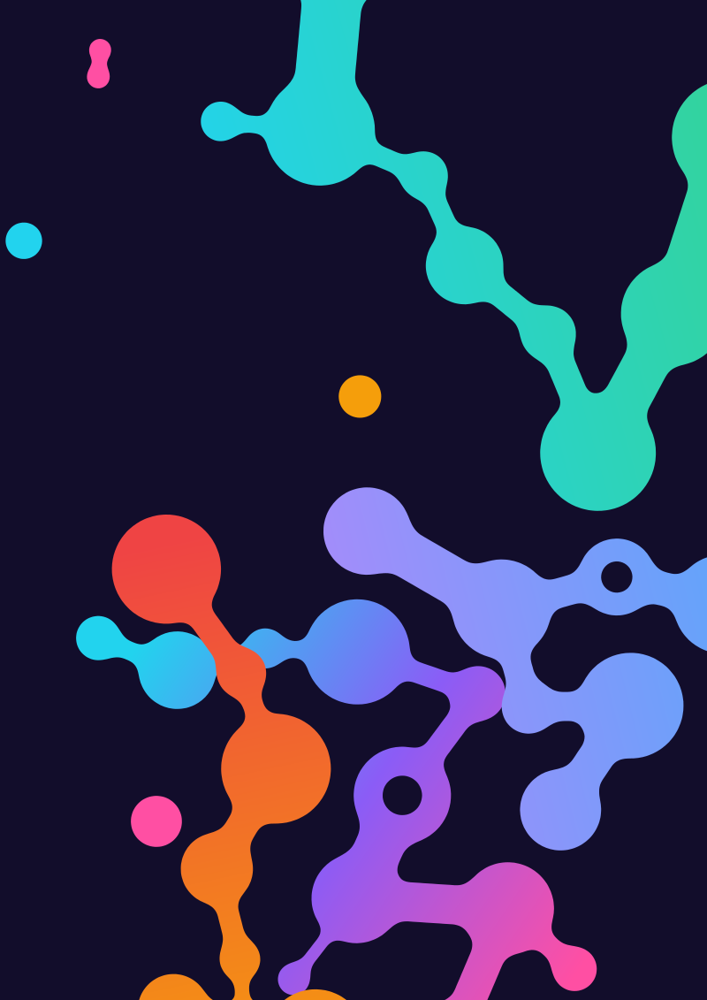
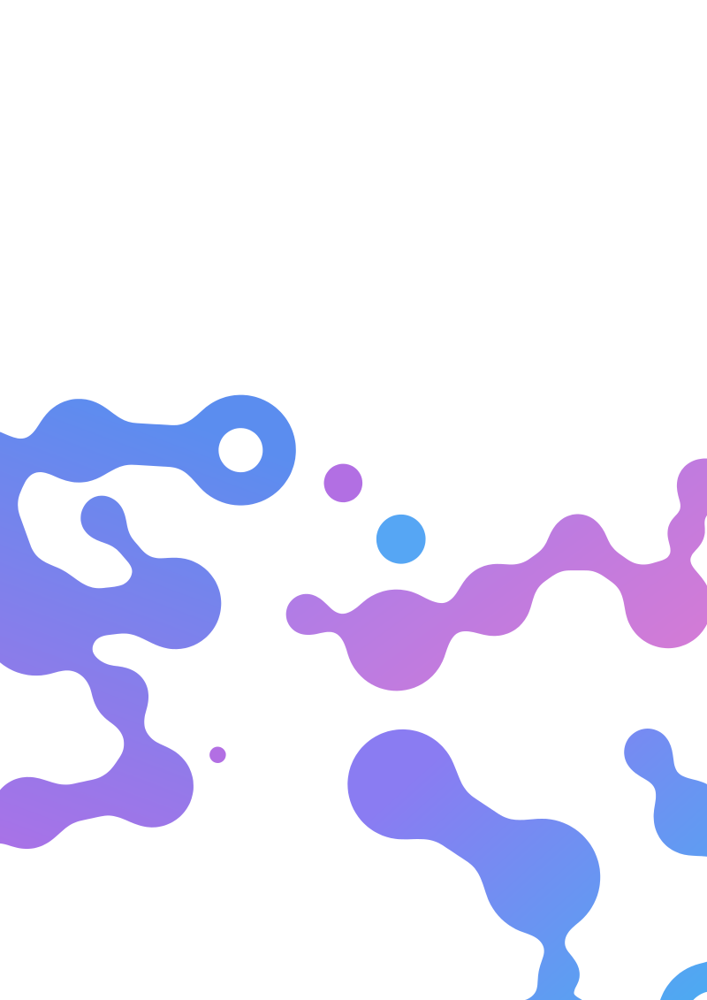
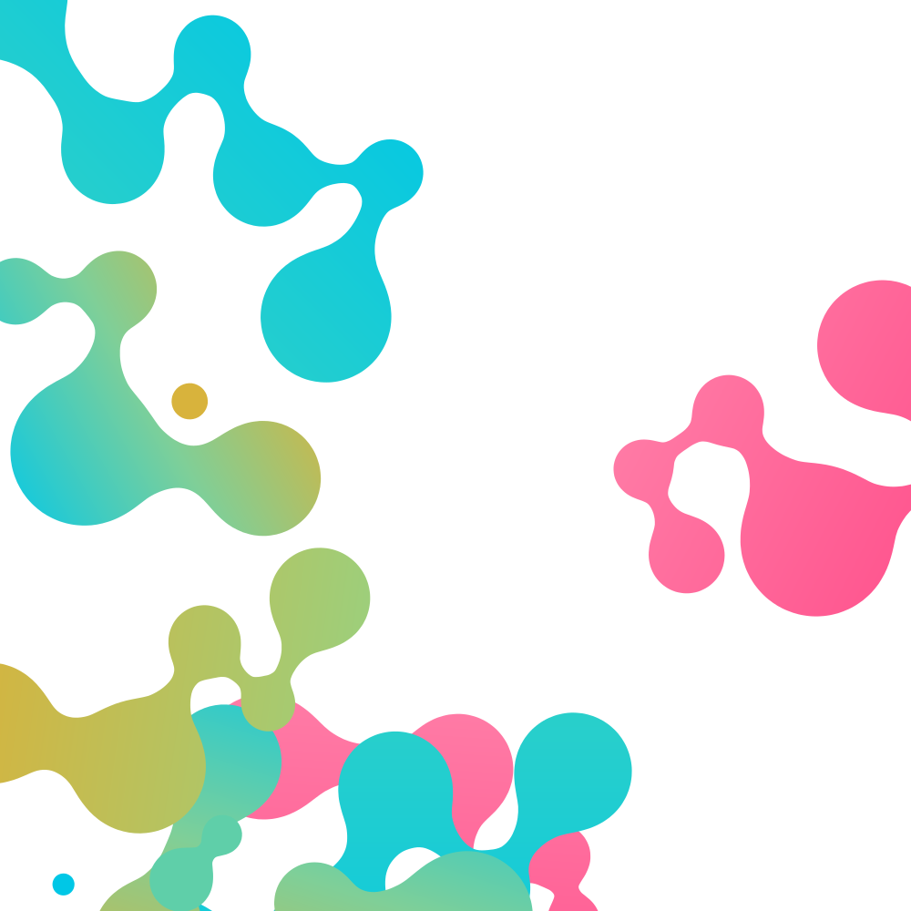
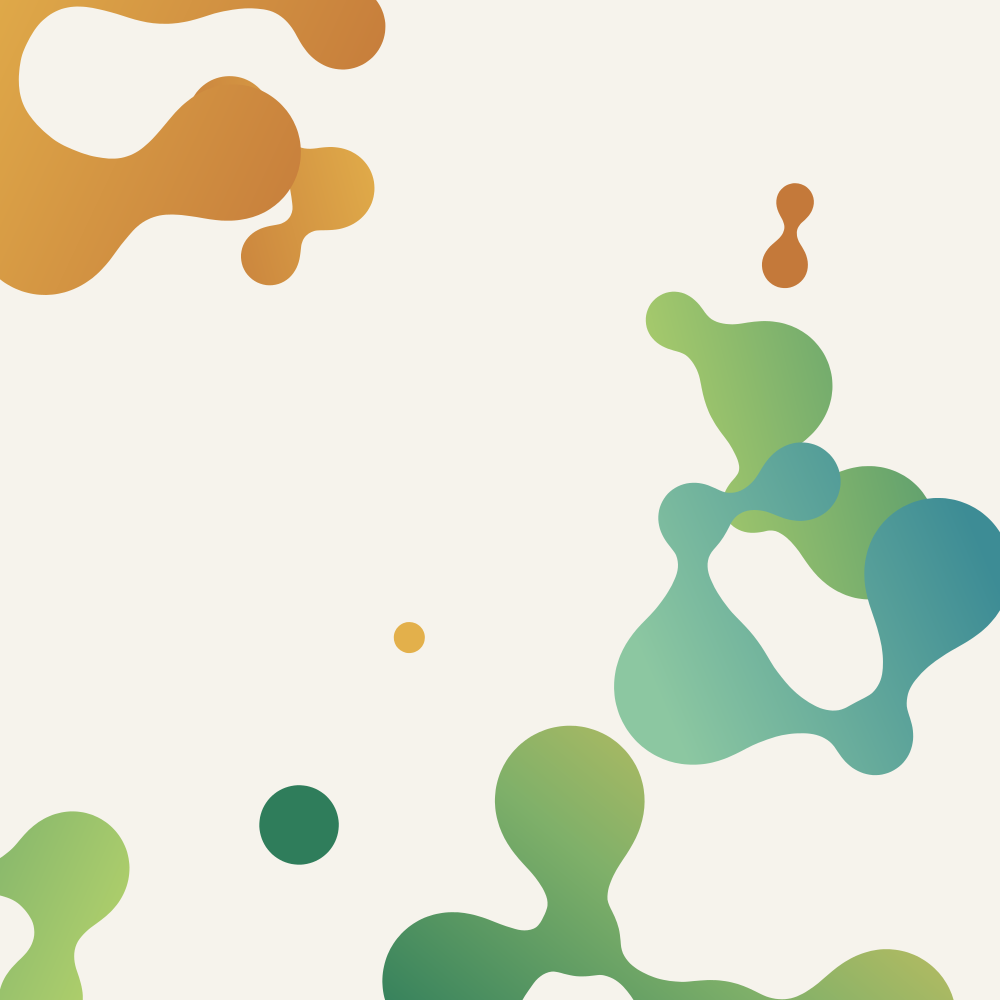
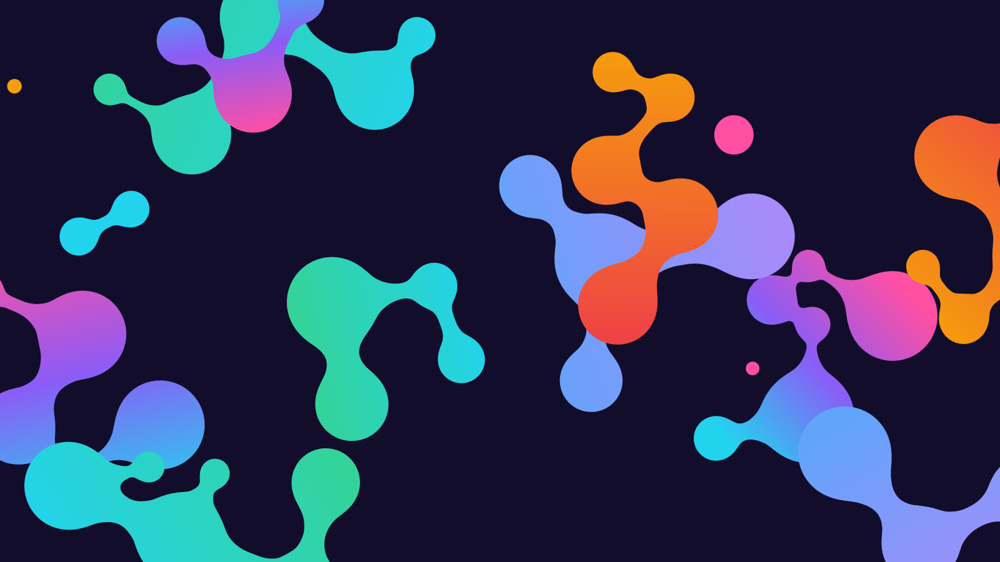

python3 molecule.py --seed 3 --palette aurore --zone droite --titre "ABSTRACT" --sous-titre "SPACE"python3 molecule.py --seed 11 --palette lagon --zone droite --titre "TECHNOLOGY" --sous-titre "CONNECT"
python3 molecule.py --seed 8 --palette sous-bois --zone droite --titre "RELIER" --sous-titre "LE VIVANT"
python3 molecule.py --seed 21 --palette corail --zone partout --plans 8
python3 molecule.py --seed 5 --palette nuit --zone partout --plans 8 --atomes 2 4
python3 molecule.py --seed 14 --palette aurore --zone bas --evasement 0.6 --fusion 1.6
python3 molecule.py --seed 30 --palette lagon --format carre --zone partout --plans 7 --atomes 3 6
python3 molecule.py --seed 42 --palette sous-bois --format carre --zone partout --coude 75 --evasement 1.4
python3 molecule.py --seed 9 --palette nuit --format paysage --zone partout --plans 10 --atomes 3 6